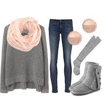
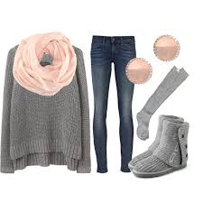

When winter you have to wear scarfs,sweaters and boots to keep warm. like these pictures you should wear this.it makes you look cute but comfy at the sametime. so remember to wear these kind of outfits.
what to wear
- boots
- comfy sweaters
- scarfs
 

When winter you have to wear scarfs,sweaters and boots to keep warm. like these pictures you should wear this.it makes you look cute but comfy at the sametime. so remember to wear these kind of outfits.